"내 아이에게 진짜 좋은 것만 먹이고 싶다."
그 평범하지만 간절한 물음이
파머스테일의 시작이었습니다.
우리는 공장을 돌리기 위해
원물을 대량으로 떼오지 않습니다.
전국을 돌며 우리가 납득할 수 있는
국내산 원물만을 — 한 점, 한 점 — 직접 선별합니다.
대량 생산하여 창고에 쌓아두지 않습니다.
필요한 만큼만, 가장 신선한 상태로 보냅니다.
우리 아이에게 맞춘,
매일의 한 끼
체중부터 활동량, 기호까지 고려한 맞춤 화식
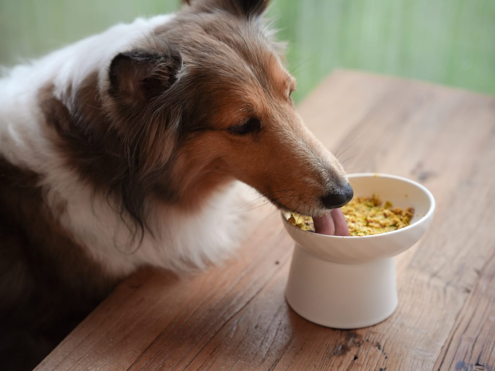
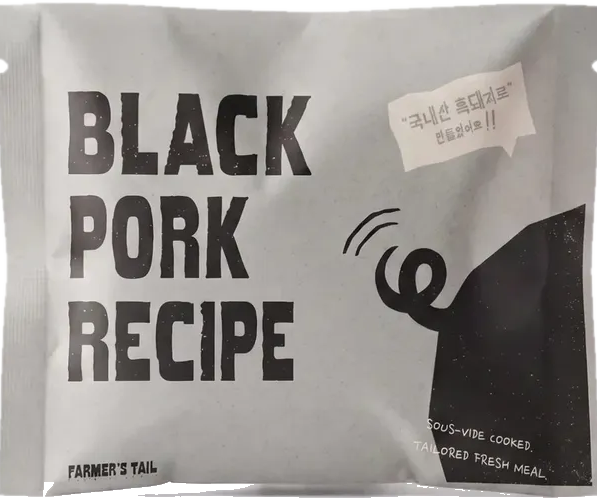
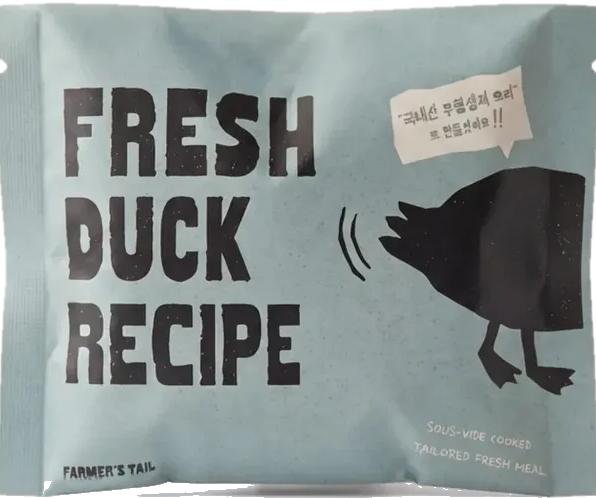
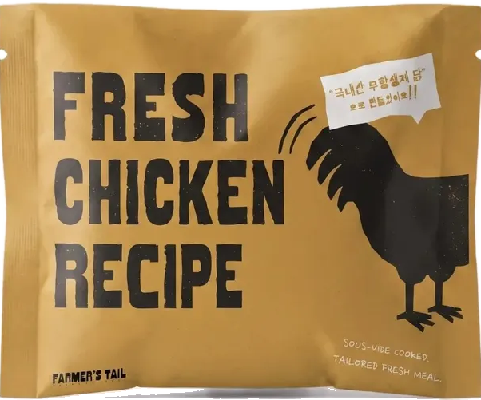
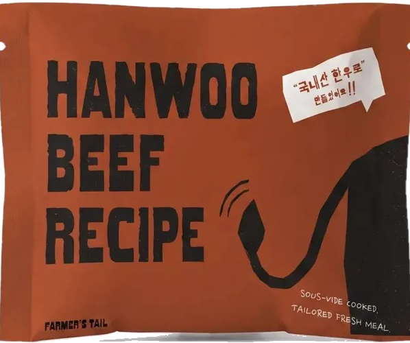
QR 스캔하고
우리 아이 맞춤 식단을
확인해 보세요
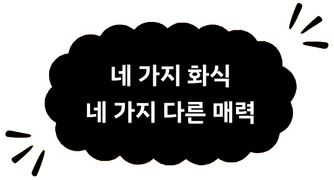
각기 다른 장점을 담은
4가지 영양 화식을 만나보세요.
완벽한 영양 밸런스를 담은
호불호 없는 닭고기 데일리 밀
기력 회복과 면역력을 동시에 채우는
프리미엄 한우 보양식
활기찬 하루와 튼튼한 근육을 책임지는
고단백 흑돼지 화식
알러지 걱정 없이 피부가 편안해지는
저알러지 오리 식단
저온 수비드로 촉촉한 육즙을 꽉 채운
100% 국내산
리얼 화식
잘 먹는 건 기본입니다
파머스 레시피가 절대
타협하지 않는 5가지 특징!
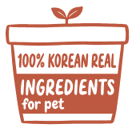
100% 국내산 원물휴먼그레이드
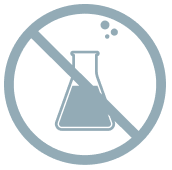
자연 그대로6無 첨가
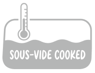
저온 수비드조리공법
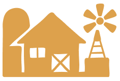
100% 자체 제조유통 마진 삭제
식약처 등록 프리믹스와
오메가 3&6 배합은 물론글로벌 3대 기준
100% 충족
육즙은 꽉 채우고 영양 손실은
냉동 보관하다간편하게 쑥!
하루 전 냉장 해동 후밥그릇에 툭!
간편 영양식
완성!
우리 아이들의 기호와 영양을 위한
100% 국내산
휴먼그레이드 원재료
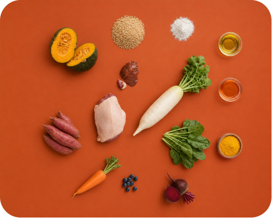
100% human grade
사람이 먹을 수 없는 건
절대 넣지 않아요
좋은 원물에서 시작한
4가지 특별한 레시피
국내산 무항생제 닭을 담아
매일 편안하게 즐길 수 있도록
만들었어요.
국내산 무항생제 오리를 담아
입맛 까다로운 아이도
맛있게 즐길 수 있어요.
국내산 한우의 풍부한 맛과
영양을 담아 활력 있는
하루를 채워줘요.
국내산 흑돼지를 담아
튼튼한 몸을 위한
영양을 더했어요.
한 끼의 마지막 퍼즐
파머스테일 뉴트리-코어
좋은 원물에 더하는 마지막 영양까지 깐깐하게.
식약처 식품원료로 등재된 성분을 사용한 프리믹스로
화식만으로 부족하기 쉬운 비타민과 미네랄을
꼼꼼하게 채웠습니다.
FARMER'S TAIL NUTRITION PREMIX
식약처 등록 프리믹스와
오메가 3&6 배합은 물론
글로벌 3대 기준 100% 충족
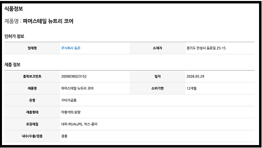
* 식품안전나라(식약처)에서 등록 사항을 확인하실 수 있습니다
파머스테일 뉴트리-코어 성분정보
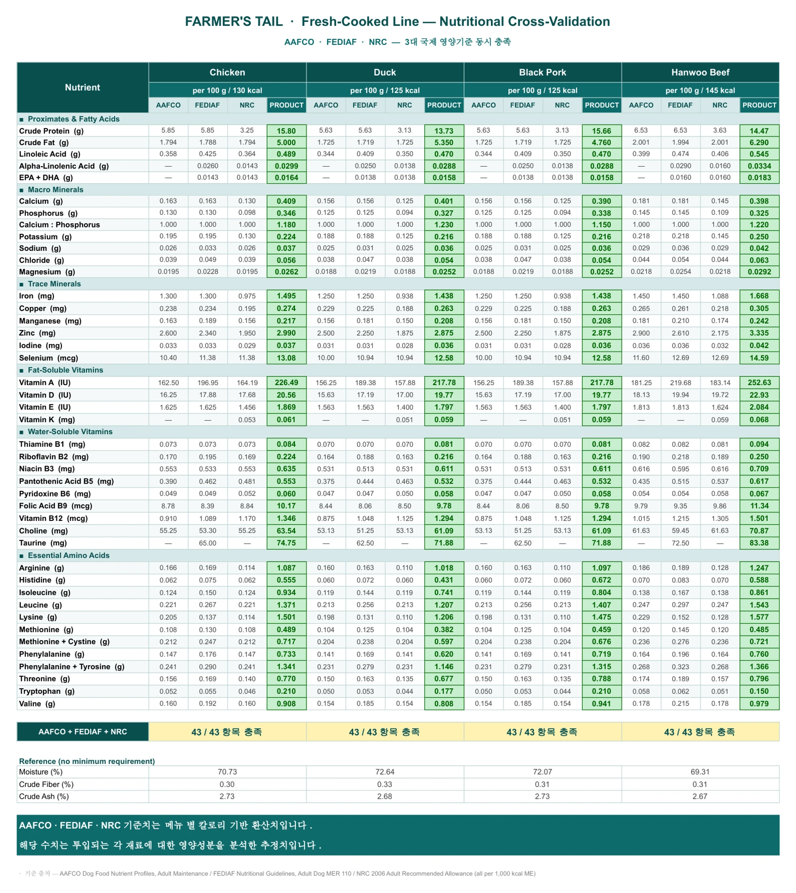
프리믹스로 부족하기 쉬운 영양까지 채운,
더 균형 잡힌 한 끼.
안심하고 급여하세요!
원물 검수부터 조리·배합·급속냉동까지
정해진 공정을 거쳐 국내에서 생산합니다.
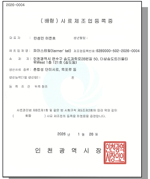
불필요한 인공첨가물 없이
원물 그대로의 한 끼
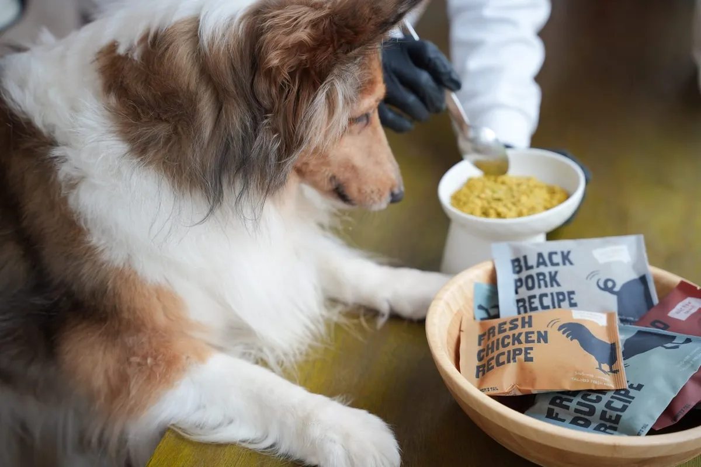
반려견에게 유해할 수 있는
각종 첨가물과 부산물은 절대 넣지 않았습니다.
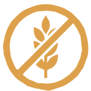
글루텐FREE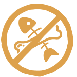
부산물FREE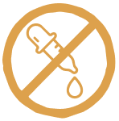
인공색소FREE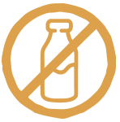
배앓이 유당 성분FREE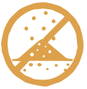
육분FREE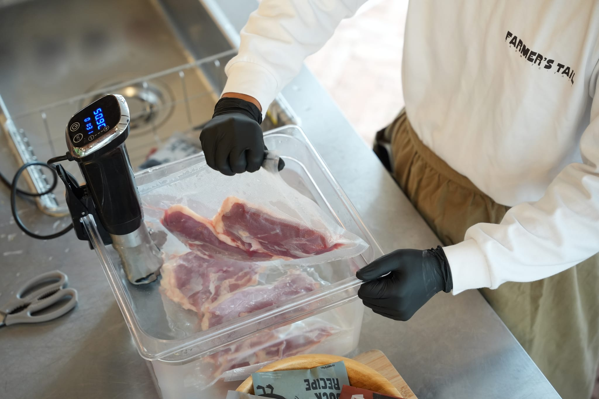
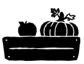
원물 검수 & 세척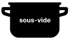
저온 수비드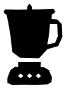
믹싱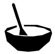
영양 배합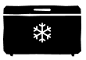
급속 냉동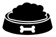
영양화식 완성파머스테일
화식 급여 꿀팁충분히 해동한 뒤 살짝 미지근하게 급여하면
원물의 향을 더욱 맛있게 즐길 수 있어요!
기존에 먹던 사료에 화식을 조금씩 섞어
천천히 급여 비율을 늘려주세요!
화식에 미지근한 물을 조금 더해
더 부드럽고 편하게 급여해주세요!
(100g 기준)
치킨 화식
125kcal
오리 화식
130kcal
한우 화식
145kcal
흑돼지 화식
125kcal
| 등록성분량 | |
|---|---|
| 조단백질 | 13.9%이상 |
| 조지방 | 5.5%이하 |
| 조섬유 | 0.3%이하 |
| 조회분 | 2.1%이하 |
| 수분 | 75.1%이하 |
| 칼슘 | 0.3%이상 |
| 인 | 0.3%이상 |
| 등록성분량 | |
|---|---|
| 조단백질 | 15.1%이상 |
| 조지방 | 4.7%이하 |
| 조섬유 | 0.3%이하 |
| 조회분 | 2.2%이하 |
| 수분 | 75.2%이하 |
| 칼슘 | 0.3%이상 |
| 인 | 0.3%이상 |
| 등록성분량 | |
|---|---|
| 조단백질 | 14.9%이상 |
| 조지방 | 5.4%이하 |
| 조섬유 | 0.2%이하 |
| 조회분 | 2.1%이하 |
| 수분 | 76.1%이하 |
| 칼슘 | 0.3%이상 |
| 인 | 0.3%이상 |
| 등록성분량 | |
|---|---|
| 조단백질 | 13.1%이상 |
| 조지방 | 5.2%이하 |
| 조섬유 | 0.3%이하 |
| 조회분 | 2.1%이하 |
| 수분 | 76.3%이하 |
| 칼슘 | 0.3%이상 |
| 인 | 0.3%이상 |
좋은 원물에서 시작한 한 그릇